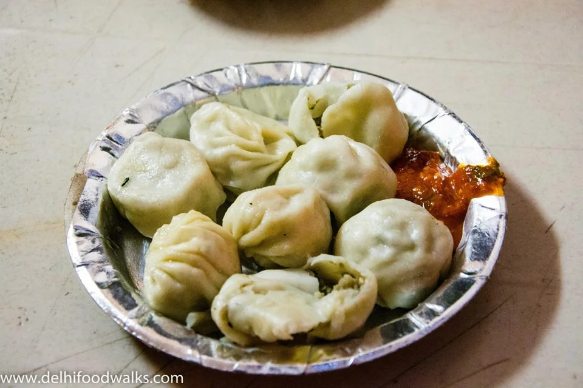

₹455 planning allowance / person
₹455 planning allowance / personRajiv Chowk · 2–3 hours
Connaught Place heritage walk
A compact Connaught Place walk from Rajiv Chowk. Includes three stops and Metro access information.

Discover the capital’s historical landmarks, diverse neighbourhoods, food traditions and cultural life. Find practical information to plan your visit.
Browse Delhi’s heritage, neighbourhoods, cultural attractions and dining guides.
Architecture and visitor guides
Explore
Dishes, restaurants and cafés
Explore
Bazaars, crafts and local markets
Explore
Faith, festivals and the arts
Explore
Green spaces and outdoor visits
Explore
Area guides and directions
Explore
Explore eight researched chapters on the city’s development, including Mughal Delhi, Shahjahanabad, 1857, the creation of New Delhi and the modern capital.
Compare an archival map of Old Delhi and the Ridge from 1857 with a modern map of the same area.
Select a route by interest, with Metro access, walking estimates and adjustable budgets.
₹455 planning allowance / personA compact Connaught Place walk from Rajiv Chowk. Includes three stops and Metro access information.
₹300 planning allowance / personA daylight walk from Lal Quila towards Jama Masjid. Includes three stops and Metro access information.
₹325 planning allowance / personA green, art-filled walk starting at Jor Bagh. Includes three stops and Metro access information.
Editable per-person allowances include food, entry, transport and a buffer. Confirm current prices; shopping, return travel and some visitor ticket categories cost extra.
Find dish guides and source-linked venue listings, with addresses and map links.

Food photographs illustrate dishes. The café directory uses Delhi street photography for context; images do not identify a listed venue.
Selected music, art and cultural programmes. Confirm dates and admission with the organiser.
The Stein Auditorium, India Habitat Centre
Details & admission ↗Conference Hall 1, India Islamic Cultural Centre
Details & admission ↗Read accounts of local history, neighbourhoods, food and travel. Residents and visitors can submit original articles for editorial review.
Accepted articles are published under the contributor’s chosen pen name.
Transport resources, access considerations, weather information and guidance for visiting religious and historical sites.
Read visitor guidanceChoose your dates, interests and budget to create a suggested route. Save or download your plan.
Open the travel plannerRecord visits, complete discovery checklists and download your personal Delhi travel passport.
Open the travel journalChoose two or three dishes around Chandni Chowk, with a short route, ingredient checks and room to enjoy the lanes.
At Humayun’s Tomb, the spaces between buildings matter.
A small plate with an extraordinary amount going on.
Build a day around Delhi’s historical monuments, street food and cafés, shopping markets and living culture. Use the researched place directory for context and official visitor links, then adjust a route to your own interests.
New to the city? Start with one area, one main visit and time for the journey. These practical reading guides help you choose.